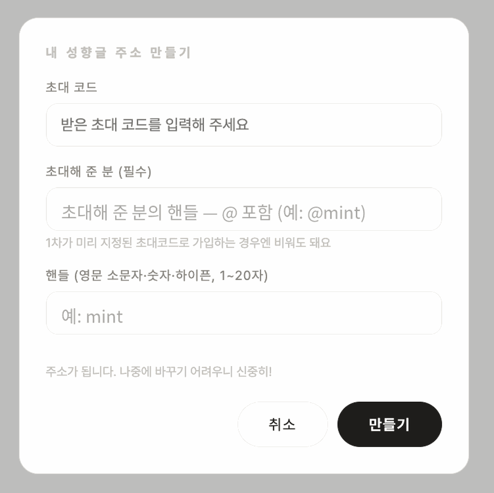

러브인포 · 시작하기
가입과 주소
러브인포는 러브로그와 별도로 가입하는 독립 서비스입니다. 같은 구글 계정을 써도 홈은 따로입니다.
가입 순서
- 첫 화면 → 시작하기 → Google 로그인.
- 초대코드를 넣습니다. 코드는 운영자가 발급하고, 러브로그 코드와는 별개입니다.
- 초대해 준 분의 핸들을
@핸들형태로 정확히 적습니다(예:@mint). 1차가 미리 지정된 초대코드라면 비워도 됩니다. - 내 핸들을 정합니다 — 영문 소문자·숫자·하이픈(가운데만) 1~20자. 치는 동안 쓸 수 있는지 바로 알려줍니다.

사진 자리img/li-start-signup.png주소
- 핸들이 곧 주소입니다 —
luvinfo.me/핸들,핸들.luvinfo.me둘 다 열립니다. - 서브도메인은 방문자용이라 로그인·편집은 본 주소에서 합니다.
- 홈 주소 변경 — 꾸미기 → 고급. 옛 주소는 7일간 안내판으로 남아 링크·배너가 자동으로 넘어갑니다. 30일에 한 번.
저장 규칙
- 편집한 내용은 ✓ 저장을 눌러야 서버에 반영됩니다. 페이지 순서·꾸미기·숨기기 전부 마찬가지.
- 저장 전에 창을 닫으면 경고가 뜹니다. 임시저장은 브라우저에 남아 다음 접속 때 복구를 물어봅니다.
- 홈 한 곳의 용량 한도는 약 1MB — 큰 HTML(15만 자 초과)은 자동으로 따로 보관됩니다.